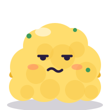

7:48 pm
The couch has you.
You're hungry. You've opened four apps and closed all of them. Getting up feels like a group project with no group.
A cooking app · pre-launch
Breakfast, lunch, dinner or a snack. Tell Yolkie your energy and your time, and it picks one meal and tells you exactly what to do next.
Free to start. The demo runs right in your browser.
01
It's worst at dinnertime, but breakfast and lunch have their moments too.
7:48 pm
You're hungry. You've opened four apps and closed all of them. Getting up feels like a group project with no group.
1 lemon
One lemon, half a jar of something, and a lot of potential. None of it is dinner yet, and you can't tell what's missing.
Ch. 1
You search for dinner and get someone's summer abroad, their grandmother, a pop-up, and then, eventually, the ingredients.
Same story at breakfast, lunch and the 3 pm snack slump. Yolkie skips all of it. One meal. One next step.
02
No meal plans, no pantry spreadsheets, no twenty open tabs.
Pick the meal, your energy (wiped, okay or good) and your time (15, 30, 60 or 60+ minutes). That's the whole questionnaire.
Not a list of forty. One meal that fits right now. Not feeling it? Ask for another one.
Tap what you've got. The rest becomes a shopping list sorted by store section, so you're not crossing the store three times.
One "do this now" timeline, with timers side by side, so the toast and the eggs (or the rice and the chicken) finish together.
03
Small things that make a tired morning, lunch break or evening easier.
Every recipe shows how many pots, pans and boards it'll use before you start. No surprise sink.
While something simmers, Yolkie hands you one tiny tidy-up. You sit down to eat with most of the kitchen already done.
Rice: 8 min leftRinse the cutting board?
Rough estimates per serving, for people who like to know. One switch hides them everywhere. Nobody's grading your plate.
Yolkie offers three picks, the house passes the phone and taps a favorite. Majority wins. Scramble sulks.

Your diet, your rulesKeto, vegan, gluten-free and more, plus a never-show-me list. Recipes with your allergies are filtered out (always check labels).
Use what you haveTap up to three things already in the fridge, and Yolkie picks a meal that uses them.
A check-in before you're hungryOne tap for your energy, and the meal and shopping list are ready.
Progress, plus Yolkie's closetMeals cooked at home, passport stamps and a weekly goal. Cook more and Yolkie unlocks new outfits. No streaks to break.
Collect as you cookRecipe cards, fridge stickers and little food friends, all earned by cooking. Nothing to buy, no random packs.
Cook for whoever's homeTap who's eating and every pick is filtered for their diets and allergies (always check labels). Dislikes just move a meal down.
Link your householdShare an invite code and the house gets one shopping list, votes and a goal. Stats stay private.
See it all in the demoTry the demo right in your browser. Nothing to install.
04
Couch, fridge, plan, dinner. The ad has no sound, so play it anywhere.
05
No. It's for anyone who hates deciding what to eat. It was built by someone with ADHD, so it's designed for low energy, short attention and tired brains, which describes a lot of people at 7:48 pm.
No. Breakfast, lunch, dinner and snacks all work the same way: pick the meal, say how you feel, get one thing to make. The demo has a few of each.
No. There's no inventory to keep up to date. Before you cook, it asks what you've got. You tap, it makes the list.
It'll be free to start. Paid plans are planned for later, and we'll share details when there's an app to pay for.
Never. Calories and protein are optional estimates, and one switch hides them.
The demo on this site runs the whole flow (pick, shop, cook, vote) in your browser. Nothing you tap is sent anywhere. The real app isn't out yet.
Early access
Yolkie is still being built. Leave your email and we'll let you know when there's something to tap.